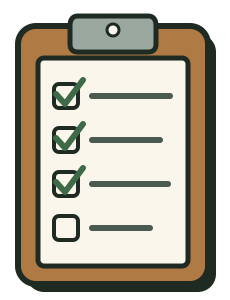

Atividade 3 · tarefa final
Planeje um evento de verdade

A · uma viagem
B · uma mudança
C · um projeto pessoal
Escolha um e responda: o quê, quando, onde, com quem e o que você vai fazer antes. Depois apresente para a turma, com a fala rápida.
6 frases com IR + infinitivo
3 marcadores de tempo
1 frase negativa
apresentar em 1 minuto

/52_teve_uma_ideia.png)